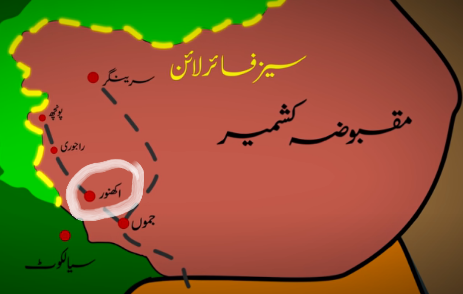

Another WAR between two hostile countries had begun, But how? Who won the War? What was the reason
behind this genocide?
Why India attacked Pakistan in the dark hours of night? What happened with Indian forces?
Pakistan fought valiantly,heroically and bravely against India and won in many feilds, there is no
hesitation to say that Pak Army succeded. Although, India
failed annexing Lahore but she still declares it as a winner.
This military operation was pre-planned by Gen.Akhtar. After the success in Rann of kutch, Ayub khan(Cheif Martial Law Administrator) agreed and the mission was launched in August 1965. According to the mission, Pak Army and Guirella force(Mujahideen), dressed in local kashmiri clothes, were to be moved in Jammu Kashmir. The strategy of this operation was to create mass uprising among Kashmiris and then to officialy attack India. However, it failed because these forces were detected by the local Kashmiris and was arrested by the Indian Army.
Operation Grandslam is also known as twin of "operation Gibralter" because it was too be launched after Gibralter had completed. However, Gibralter was failed and Indian forces were alarmed, it was not supposed to launch a military operation under such conditions. The objective of this step was to capture Akhnoor(shown in white circle), and to cut Indian supplies through rest of India. Gen.Akhtar launched this operation on 1 September,1965. Pak army crossed the cease-fire line, invading futher areas and moving towards Akhnoor. But on 2 Sep,1965 Gen.Akhtar was replaced with Gen.Yahya. This step proved to be the turning point of Operating Grandslamm. because India got much time to take their positions in Akhnoor.Yahya Khan ordered thier forces to acquire a defend position. Now, a lot of time was wasted and Pak Army failed invade Akhnoor(shown in white circle) In this way, Grandslamm was failed. Later on 6 Sep,1965 Indian army crossed the international border of Pakistan in Lahore.
On the dawn of Sep 6, India, without formal declaration of war, crossed the international border and attacked Pakistan from Lahore and Kasur fronts. This was the material beginning of war 1965. The BRB canal became the battlefeild in this dispute. Indian forces had to cross The BRB canal before they attack Lahore city. In this warfare, Majore General Aziz Bhatti emerged as a rising star for Pakistan. He disrupted the hostile forces for several days and finally was embraced with martyrdom. He was granted with Pakistan's highest military award, Nishan-e-Haider. Pak force also demoralized Indian forces in many other fronts including Kasur, Sialkor, Rhajastan and Sulemanki.
During the aerial war, PAF tigers inflicted serious injuries to enemy by hitting their targets with pin-point accuracy and taking the control of battlefield. On September 1, 1965, the aerial phase of the war began. In four waves, 28 fighter jets were scrambled from Pathankot by the Indian military. In response, the Pakistan Air Force sent two F-86 Sabres, flown by Sarfaraz Rafique and Imtiaz Bhatti. Though outnumbered at 2:28 they entered the airspace and engaged with Indian aeroplanes. In this battle, four Indian Vampire jets were destroyed while two Sabres of Pak safely returned. A remarkable contribution of Pak Air Commodore, Muhammad Mahmood Alam, who was flying an F-86 Sabre and shot down five Indian jets in under a minute. He was awarded the Sitara-e-Jurat twice, the nation's third highest military award for his actions. The intensity of air war lessened after Sep 8. Both forces changed their doctrine from aerial war to ground attacks and concentrated their efforts on cutting sensitive supply lines
Tank War of 1965 can't be left undiscussed due to its sky-scraping importance. This was the biggest tank war after Battle of Kusrk in WW-2. This war was fought near Chavinda, the Chavinda-Sialkot people wrote a golden history of bravery by sacrificing their lifes for the motherland. It is said that local people of Pak laid down under the invading tanks with bombs and blew themselves, also destroying hundred of Indian tanks. The Chavinda sector seemed out to be the graveyard of Indian tanks. Pakistan claimed to knock out 120 Indian tanks and lost its 44 tanks.
On sep 20 , The United Nations appealed for a ceasefire, India immediately accepted it because it was in the state of crumbling. Pakistan accepted it on 23 September with several notable dramatics. The ceasefire remained in effect until the start of the Indo-Pakistani War of 1971. The Soviet Union also initiated peace negotiations in Uzbekistan to prevent both Sout-Asian countries from fighting. Pak President Ayub khan and Indian P.M. Lal Bahadur Shashtri also signed it. Physicaly, but not psychologicaly, peace was developed which also broke out in 1971.